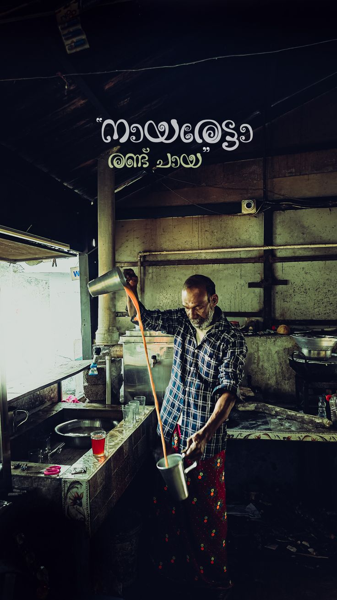
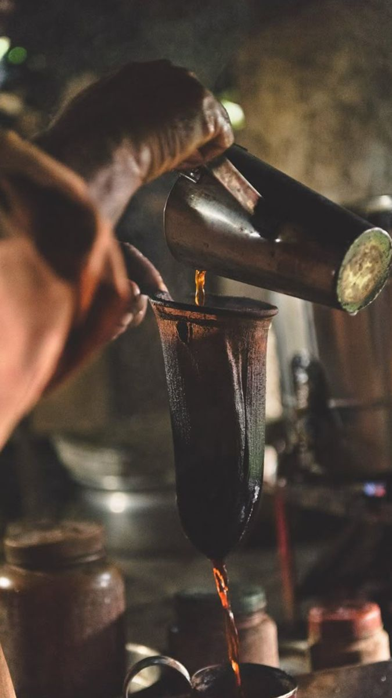
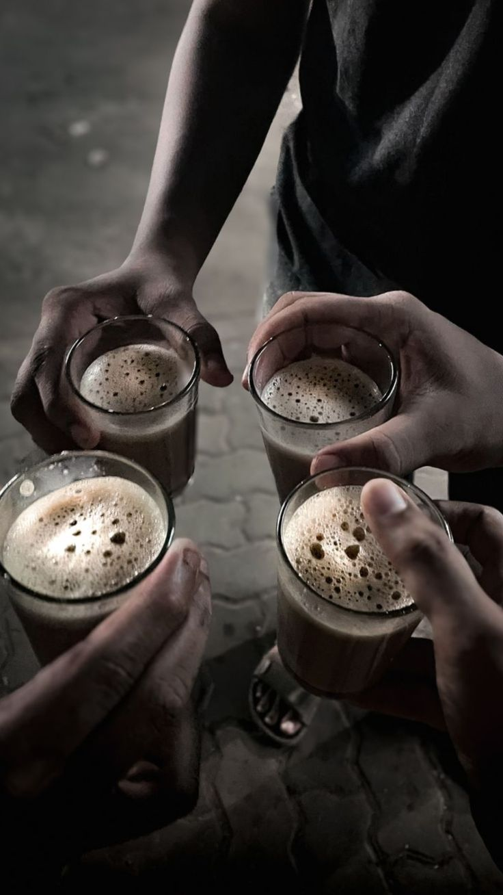
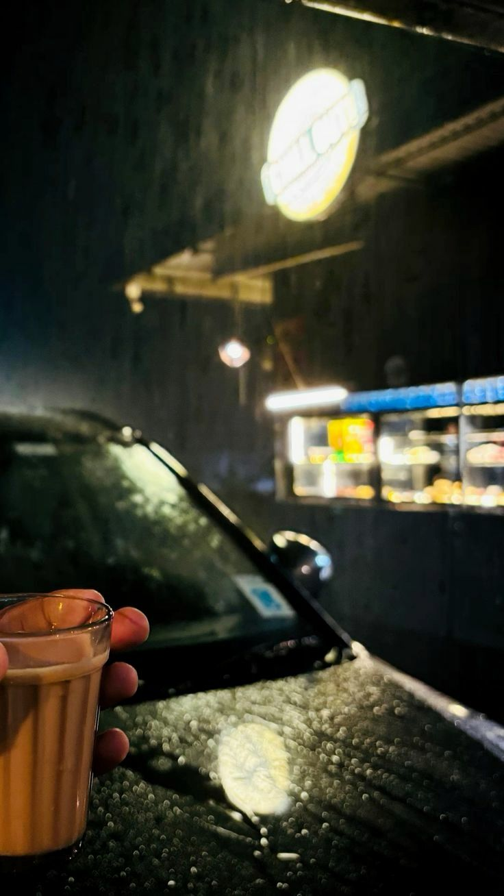

Where stories outlive the steam.

Long before cafés, fast-food outlets, and branded chains arrived, Kerala’s roadsides were lined with modest tea stalls built from tin sheets, wooden planks, and whatever materials were available. These small structures stood under coconut trees, beside bus stops, or at the corner of dusty village roads, quietly becoming part of everyday life.
Inside, the setup was simple — a blackened kettle that never seemed to cool, a small stove fueled by firewood or kerosene, glass tumblers stacked in neat rows, and a few wooden benches polished by years of use. There were no menus, no signboards, and no decoration beyond the glow of a lantern at dusk.
Yet these humble spaces were far more than places to drink tea. They became gathering points where workers paused after long shifts, travelers waited for the next bus, farmers discussed the day’s news, and neighbors exchanged stories. In a state known for conversation and community, the tea stall quietly evolved into a social heartbeat — a place where time slowed down, strangers became familiar faces, and a single glass of chaya could hold an entire evening together.

Most thattukadas were not built by companies or trained chefs, but by ordinary people — cooks, daily wage workers, small entrepreneurs, and families searching for a stable livelihood. With limited resources but immense determination, they started with little more than a stove, a kettle, and a willingness to work through the night.
Many of these stalls were run by individuals who knew their customers by name, remembered their usual orders, and often extended credit during difficult times. The shopkeeper was not just a vendor but a familiar presence — someone who listened, joked, advised, and became part of people’s routines.
Over the years, these humble businesses passed from one generation to the next. Sons learned the craft from fathers, daughters helped prepare snacks, and families grew alongside the stall itself. What began as a means of survival slowly transformed into a landmark of the neighborhood, carrying memories, relationships, and stories that outlived decades.

In Kerala, chaya is not merely a beverage — it is a daily ritual woven into the rhythm of life. Mornings often begin with the aroma of boiling tea leaves and milk, while evenings pause for a shared glass that signals a moment of rest.
Rainfall feels incomplete without hot tea and a plate of snacks. Guests are welcomed not with formalities but with a simple question — “Chaya undo?” Offices pause for tea breaks, conversations flow more easily, and even silence becomes comfortable with a warm glass in hand.
Across generations, chaya has remained Kerala’s common language — connecting strangers, comforting the weary, and turning ordinary moments into shared experiences. In every sip lives a sense of home.

In Kerala, rain is not an interruption — it is an invitation. As dark clouds gather and the first drops strike the tiled roofs, kettles are placed on the stove almost instinctively. The aroma of boiling tea fills homes and roadside stalls, blending with the earthy scent of wet soil.
People stand under awnings, watching sheets of rain blur the world beyond, hands wrapped around warm glass tumblers. Fried snacks sizzle beside the kettle, laughter grows louder, and time seems to slow down with every sip.
For many, the memory of Kerala’s monsoon is inseparable from the taste of strong chaya — a simple comfort that turns grey skies into something gentle, familiar, and deeply human.
These tea shops became social equalizers where drivers, students, laborers, and businessmen shared the same bench and the same glass of tea.